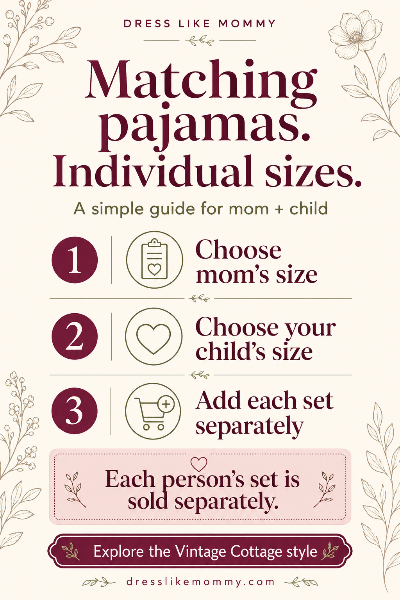

Two organic Pinterest drafts for one exact product: floral-style discovery and choosing each wearer's size. The cards below contain the proposed Pin copy and destination.
Pin 2: native editor verified; draft persistence failed. One reviewed 1024 × 1536 PNG was uploaded. The exact image, copy, link, alt text, existing pajama board and AI disclosure matched in Chrome Test. Leaving and reopening returned an empty builder, so this local version is the recovery source. No saved draft was retrieved or verified, and no Pin was published. Board and own-Pin text searches found no match within their limits; public Pin/mobile/checkout and exact release approval remain. Pin 1 is unchanged and unuploaded.
Pin 1 · Discover the floral mother-and-child pajama style
Floral Mommy & Me Pajamas | Each Person's Set Sold Separately
Title 61/100 · Description 174/800
Vintage Cottage floral pajamas feature a short-sleeve button-down top and shorts. Each person's set is sold separately. Explore the floral style and view the product details.
pinterest_organic_product_source.json: title, variants, descriptionHtml and image metadata; focused_paid_test.md:7 for separately sold wording and prior rendered product evidence.

Pin 2 · Choose a separate size for each wearer
Choose Mother & Child Pajama Sizes | Each Set Sold Separately
Title 61/100 · Description 199/800
Mother S–XL and Child 2–10 Years are separate size choices for Vintage Cottage floral pajamas. Each person's set is sold separately. See the options and choose each person's size on the product page.
Family Matching Pajamas — public, 21 Pins. Bounded Vintage title/description search found no match; this is not account-wide duplicate proof.
Guide alt text
Shopping guide for matching mom-and-child pajamas: choose mom's size, choose your child's size, then add each set separately. Each person's set is sold separately.
Selected creative
Original typography buying guide, independently viewed locally. PNG1024×1536, exact2:3,1,663,621bytes; no product photo or garment depiction. Native Pinterest display remains untested.
pinterest_organic_product_source.json: title, variants, descriptionHtml and image metadata; focused_paid_test.md:7 for separately sold wording and prior rendered product evidence.